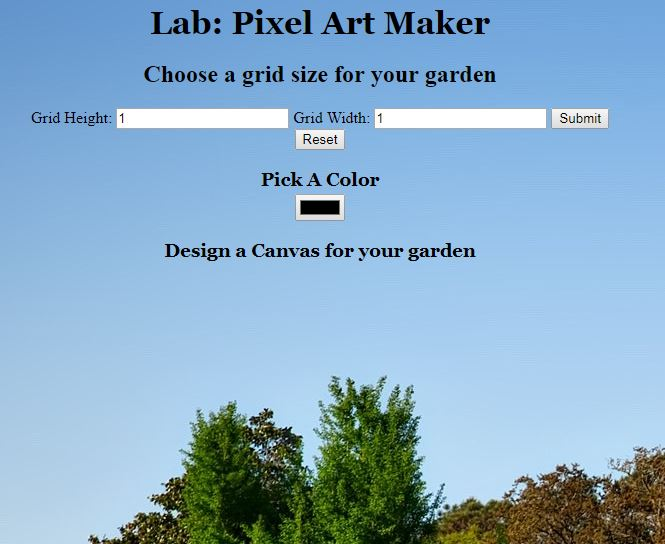
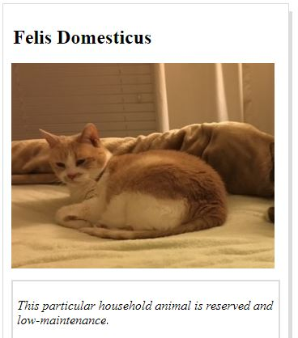
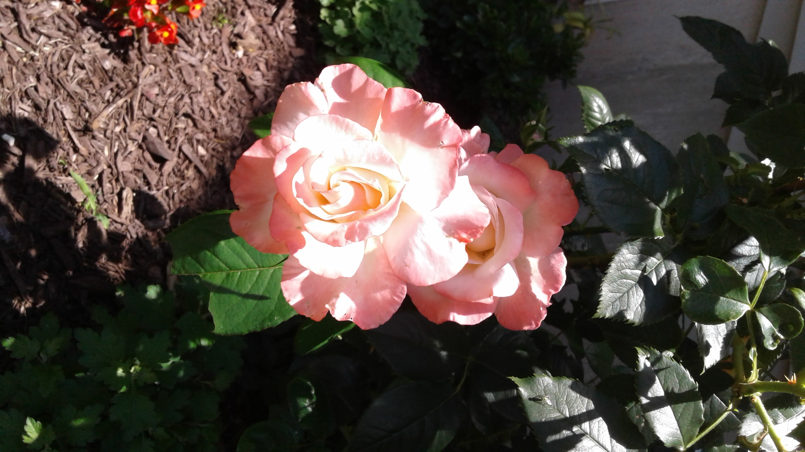

My Story

Some people maybe wondering, what does coding and gardening have in common? Well, alot! First of all, they are my favorite things to do now. So for my portfolio, I wanted to showcase some of my work. In many ways, coding and gardening provides a certain satisfaction/peace while you are in the process of planning and creating. In the end, when you are done with your work, you could sit back and admire what you have done. Happy perusing!
Featured Work

Pixel Art Maker

Animal Trading Card
